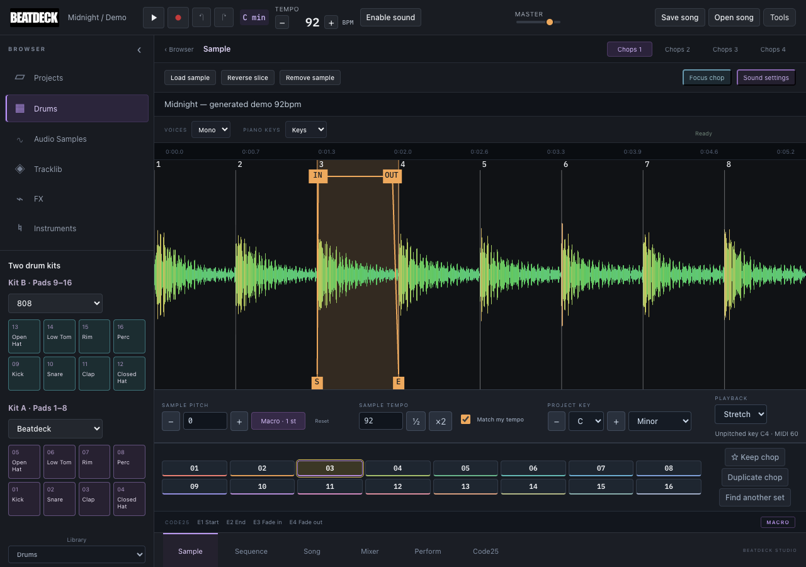
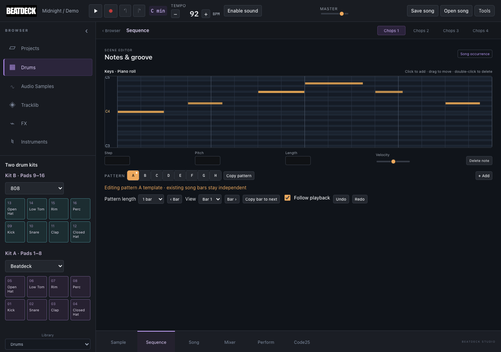
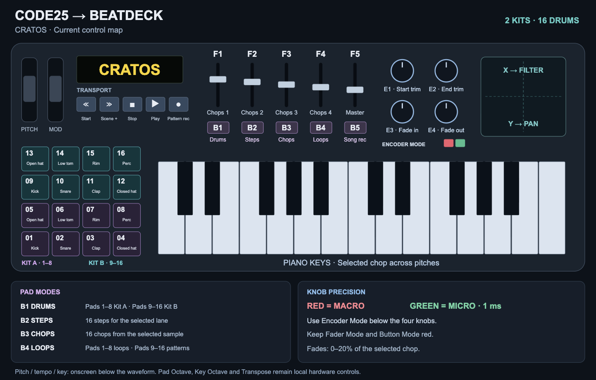

Chop it. Play it. Flip it.
Beatdeck is a free beat-making studio for your Mac. Chop any sample onto pads, play the chops as melodies, sequence two drum kits, and build it all into a song, right from your MIDI controller.
Free. No login. Opens straight to the grid.

From a sample to a song.
Chop any sample
Trim, fade and slice a sample onto 16 chop pads. Play chops one at a time or as chords.
Notes & groove
A melodic piano roll plus drum steps. Build patterns into scenes, then a full song.
Hands on
Two eight-piece drum kits across 16 pads, played from your Code25, Maschine MK2 or Alesis Vortex.
Built for your hands, not your mouse.


The details that matter.
Stretch or Tape
Change tempo and pitch separately, or link them like tape.
Your sample folders
A separate local library for samples and drums. Your files are never moved.
WAV + projects
Bounce your beat to WAV and save portable .beatdeck projects.
Getting it running
- Download the DMGGrab Beatdeck from the download button.
- Drag it to ApplicationsOpen the DMG and drag Beatdeck onto Applications, then eject it.
- Open it the first timeIt isn't from the App Store yet. If macOS blocks it, go to System Settings → Privacy & Security and click Open Anyway.
- Turn on soundClick Enable sound, then connect your MIDI controller.
- Map your controllerCode25 users: follow the controller map. Other controllers use the Learn controls.
- An Apple Silicon Mac (M-series)
- macOS 13 Ventura or newer
- Optional: a MIDI controller (Code25 ready)
- No Node.js or developer tools needed
Stuck? The full install guide has every detail.
Try it. Tell me what to build next.
Beatdeck is free. If you make something with it, I want to hear it, and I want to know what's confusing or missing. A native version with plug-in support is planned next.
Easiest way to reach me: DM @djhellojoey on Instagram.